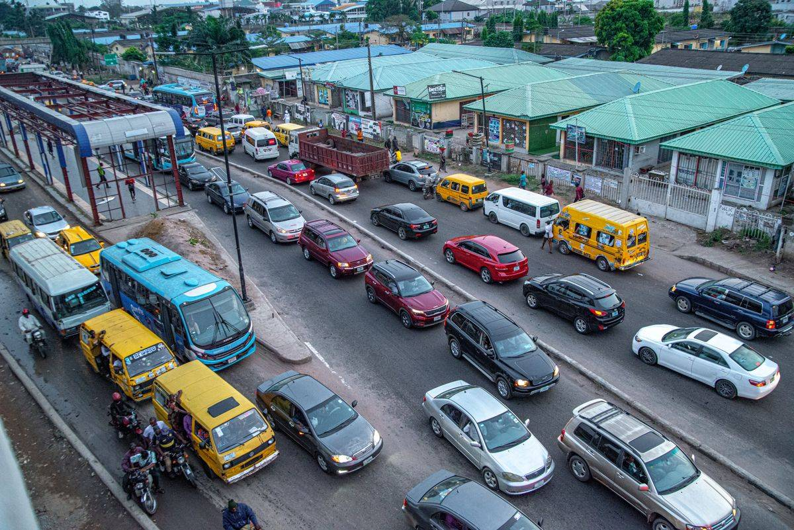

Kalau pajak motormu telat dan dendanya bikin malas bayar, minggu ini momen yang pas buat beresin. Sejumlah provinsi masih menggelar pemutihan pajak kendaraan bermotor, dan sebagian programnya berakhir 31 Oktober 2026. Dari hari ini, kamu cuma punya waktu sekitar seminggu.
Kabar baiknya, kamu tidak harus antre di kantor Samsat. Pajak tahunan bisa dibayar dari HP lewat aplikasi SIGNAL, aplikasi resmi Samsat Digital Nasional. Artikel ini merangkum daerah yang programnya masih jalan dan langkah membayarnya dari HP, dengan kondisi per Oktober 2026.
Pemutihan masih jalan di provinsi mana saja
Pemutihan itu intinya penghapusan atau pengurangan denda keterlambatan bayar pajak. Tiap provinsi punya paketnya sendiri: ada yang cuma menghapus denda, ada yang memberi diskon pokok pajak, ada juga yang membatasi penagihan tunggakan jadi lebih ringan. Berikut daerah yang programnya masih berjalan per Oktober 2026, berdasarkan pemberitaan media nasional:
- Berakhir 31 Oktober 2026: Banten, Sumatera Selatan, Lampung, Kepulauan Bangka Belitung, Papua Barat, Kepulauan Riau.
- Berakhir 11 November 2026: Bali.
- Berakhir 22 November 2026: Kalimantan Timur.
- Berakhir 30 November 2026: Jawa Timur, Riau.
- Berakhir 19 Desember 2026: Nusa Tenggara Barat, khusus diskon untuk mutasi masuk kendaraan luar daerah.
- Berakhir 28 Desember 2026: Jawa Tengah.
- Sampai akhir Desember 2026: Kalimantan Utara.
Catatan penting: rincian keringanannya beda-beda tiap daerah dan jadwalnya bisa berubah. Sebelum bayar, cek dulu situs resmi Bapenda provinsimu untuk memastikan syarat lengkap yang berlaku buat plat kendaraanmu.

Cek dulu sebelum bayar dari HP
Aplikasi SIGNAL cuma melayani pajak tahunan. Kalau kendaraanmu sudah waktunya ganti plat lima tahunan, kamu tetap harus datang ke Samsat karena ada pemeriksaan fisik kendaraan. Selain itu ada tiga syarat yang wajib terpenuhi: tunggakan pajak tidak lebih dari satu tahun, kendaraan tidak dalam status diblokir, dan data provinsimu sudah tersambung ke SIGNAL. Sejumlah provinsi yang datanya sudah tersambung antara lain DKI Jakarta, Banten, Jawa Barat, Jawa Tengah, Jawa Timur, Bali, Sumatera Barat, Riau, Kepulauan Riau, Jambi, Bengkulu, Sulawesi Selatan, Sulawesi Tenggara, Sulawesi Barat, dan NTB.
Kalau salah satu syaratnya tidak terpenuhi, pembayaran online akan ditolak sistem. Jadi pastikan dulu kondisinya, jangan langsung unduh aplikasinya.
Cara bayar pajak kendaraan online pakai SIGNAL
Kalau semua syarat di atas terpenuhi, langkahnya begini:
- Unduh aplikasi SIGNAL di Play Store atau App Store.
- Daftar akun: siapkan NIK, foto e-KTP, nomor HP aktif, dan alamat email. Kamu juga diminta verifikasi wajah lewat swafoto dan memasukkan kode OTP yang dikirim lewat SMS.
- Tambahkan kendaraan: pilih menu tambah data kendaraan, masukkan nomor polisi dan lima digit terakhir nomor rangka yang tertera di STNK. Kalau kendaraan milik keluarga dalam satu KK, pilih opsi milik keluarga dan siapkan foto KTP pemiliknya.
- Pilih kendaraan yang mau dibayar, lalu ajukan pendaftaran pengesahan STNK. Sistem menampilkan rincian tagihan: pokok PKB, SWDKLLJ, dan denda kalau ada.
- Terbitkan kode bayar, lalu selesaikan pembayaran lewat mobile banking, ATM, atau e-wallet yang bekerja sama. Penting: kode bayar cuma berlaku 2 jam. Siapkan saldo dulu sebelum menekan tombol terbitkan kode, supaya tidak kedaluwarsa di tengah jalan dan kamu harus mengulang dari awal.
- Sesudah pembayaran berhasil, kamu menerima bukti digital (e-TBPKP) dan pengesahan STNK elektronik yang sah. Bukti fisik dan stiker pengesahan bisa dikirim ke alamat rumah lewat ekspedisi, atau dicetak di gerai Samsat drive thru.
Yang tidak bisa dilakukan dari HP
Biar tidak buang waktu, pahami dulu empat batasannya:
- Pajak lima tahunan dan ganti plat nomor wajib cek fisik di Samsat, tidak bisa online.
- Tunggakan lebih dari satu tahun tidak bisa dibayar lewat SIGNAL.
- Kendaraan berstatus blokir harus diurus dulu blokirnya sebelum bisa bayar.
- Data daerah belum tersambung ke SIGNAL: pakai layanan e-Samsat daerahmu atau datang langsung.
Tiga tips biar tidak gagal
Pertama, bayar jauh-jauh hari sebelum batas pemutihan. Menjelang tanggal akhir, antrean di Samsat membludak dan layanan online juga bisa melambat karena banyak yang mengakses bareng. Kedua, jangan percaya link pembayaran dari pesan berantai. Masukkan data kendaraan hanya di aplikasi SIGNAL resmi atau situs Bapenda provinsimu. Ketiga, simpan bukti digitalnya. e-TBPKP dan e-pengesahan tersimpan di aplikasi dan sah dipakai sebagai bukti bayar kalau suatu saat ditanya di jalan.
Intinya
Pemutihan pajak kendaraan Oktober 2026 adalah kesempatan buat menghapus denda yang selama ini bikin kamu menunda bayar, dan di banyak provinsi programnya tinggal hitungan hari. Selama pajakmu pajak tahunan dan tunggakannya tidak lebih dari setahun, semuanya bisa beres dari HP lewat SIGNAL tanpa antre. Cek dulu provinsimu masih kebagian atau tidak, siapkan dokumennya, dan bayar sebelum kodenya kedaluwarsa. Semua kondisi di artikel ini mengikuti keadaan per Oktober 2026.
← Kembali ke Other